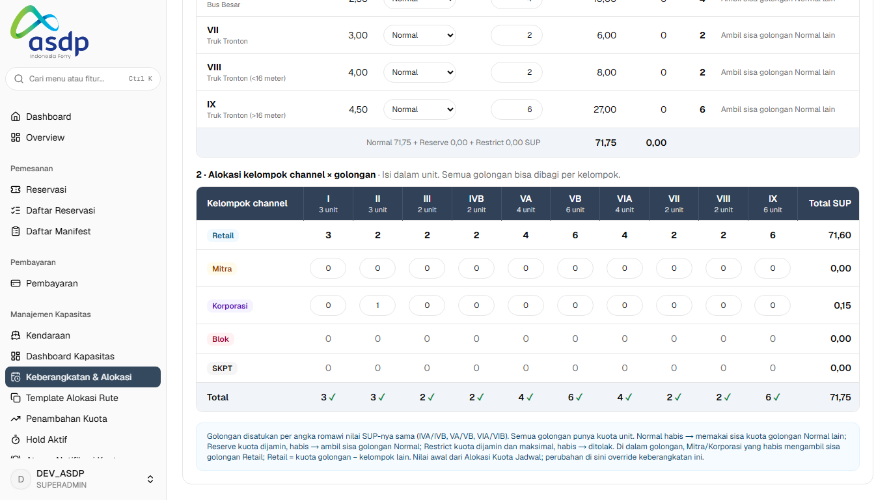
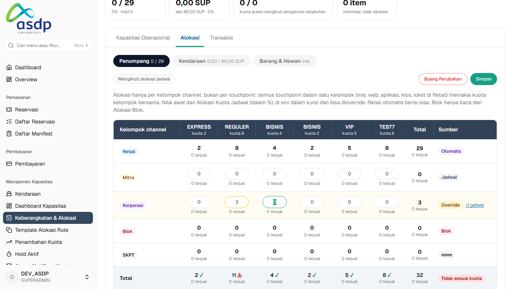

TEMUAN Keberangkatan — Alokasi Korporasi (ubah data + restore) > [Temuan] KK-T02 (Penumpang) Simpan berikutnya seharusnya TIDAK menghapus override yang sudah tersimpan
UI\keberangkatan-korporasi-ubah.spec.ts · PEMERIKSAAN
KK-T02 — Override alokasi yang sudah tersimpan hilang diam-diam saat Simpan berikutnya (Penumpang)
Langkah:
1. Buka menu Keberangkatan & Alokasi
2. Pilih rute MERAK - BAKAUHENI, tanggal 2027-05-02
3. Klik jadwal MRK-BKH-REG-2100 → tab Alokasi
4. Isi Korporasi kelas REGULER = 3 → Simpan (toast "Alokasi berhasil disimpan") → reload: Korporasi = 3
5. Isi Mitra kelas EXPRESS = 1 → Simpan (toast "Alokasi berhasil disimpan")
6. Reload halaman, lihat baris Korporasi
Ekspektasi: Korporasi REGULER tetap 3 dan Mitra EXPRESS = 1 (kedua override tersimpan)
Aktual: Korporasi REGULER = 0, Mitra EXPRESS = 1 — override sebelumnya terhapus tanpa pemberitahuan

Bukti screenshot (klik untuk memperbesar) — file: hasil/bukti/KK-T02_20261112-084220.png
Cetakan test
[TEMUAN] KK-T02 — Override alokasi yang sudah tersimpan hilang diam-diam saat Simpan berikutnya (Penumpang)
Langkah:
1. Buka menu Keberangkatan & Alokasi
2. Pilih rute MERAK - BAKAUHENI, tanggal 2027-05-02
3. Klik jadwal MRK-BKH-REG-2100 → tab Alokasi
4. Isi Korporasi kelas REGULER = 3 → Simpan (toast "Alokasi berhasil disimpan") → reload: Korporasi = 3
5. Isi Mitra kelas EXPRESS = 1 → Simpan (toast "Alokasi berhasil disimpan")
6. Reload halaman, lihat baris Korporasi
Ekspektasi: Korporasi REGULER tetap 3 dan Mitra EXPRESS = 1 (kedua override tersimpan)
Aktual: Korporasi REGULER = 0, Mitra EXPRESS = 1 — override sebelumnya terhapus tanpa pemberitahuan
(bukti: hasil\bukti\KK-T02_20261112-084220.png)
TEMUAN Keberangkatan — Alokasi Korporasi (ubah data + restore) > [Temuan] KK-T03 (Kendaraan) Simpan berikutnya seharusnya TIDAK menghapus override yang sudah tersimpan
UI\keberangkatan-korporasi-ubah.spec.ts · PEMERIKSAAN
KK-T03 — Override alokasi kendaraan yang sudah tersimpan hilang diam-diam saat Simpan berikutnya
Langkah:
1. Buka menu Keberangkatan & Alokasi
2. Pilih rute MERAK - BAKAUHENI, tanggal 2027-05-02
3. Klik jadwal MRK-BKH-REG-2100 → tab Alokasi
4. Buka sub-tab Kendaraan
5. Isi Mitra golongan I = 1 → Simpan → reload: Mitra = 1
6. Isi Korporasi golongan II = 1 → Simpan (toast "Alokasi berhasil disimpan")
7. Reload halaman, lihat baris Mitra
Ekspektasi: Mitra golongan I tetap 1 dan Korporasi golongan II = 1
Aktual: Mitra golongan I = 0, Korporasi golongan II = 1 — override sebelumnya terhapus tanpa pemberitahuan

Bukti screenshot (klik untuk memperbesar) — file: hasil/bukti/KK-T03_20261112-084258.png
Cetakan test
[TEMUAN] KK-T03 — Override alokasi kendaraan yang sudah tersimpan hilang diam-diam saat Simpan berikutnya
Langkah:
1. Buka menu Keberangkatan & Alokasi
2. Pilih rute MERAK - BAKAUHENI, tanggal 2027-05-02
3. Klik jadwal MRK-BKH-REG-2100 → tab Alokasi
4. Buka sub-tab Kendaraan
5. Isi Mitra golongan I = 1 → Simpan → reload: Mitra = 1
6. Isi Korporasi golongan II = 1 → Simpan (toast "Alokasi berhasil disimpan")
7. Reload halaman, lihat baris Mitra
Ekspektasi: Mitra golongan I tetap 1 dan Korporasi golongan II = 1
Aktual: Mitra golongan I = 0, Korporasi golongan II = 1 — override sebelumnya terhapus tanpa pemberitahuan
(bukti: hasil\bukti\KK-T03_20261112-084258.png)
TEMUAN Keberangkatan — Alokasi Korporasi (read-only) > [Temuan] KK-T01 preview Korporasi valid (Penumpang) seharusnya mengurangi Retail sebelum disimpan
UI\keberangkatan-korporasi.spec.ts · PEMERIKSAAN
KK-T01 — Preview alokasi salah saat Korporasi diisi nilai yang valid
Langkah:
1. Buka menu Keberangkatan & Alokasi
2. Pilih rute MERAK - BAKAUHENI, tanggal 2027-05-02
3. Klik jadwal MRK-BKH-REG-2100 → tab Alokasi
4. Isi Korporasi kelas REGULER = 3 (kuota kelas 8), belum klik Simpan
Ekspektasi: Retail REGULER otomatis jadi 5, total kelas tetap 8, status "Sesuai kuota"
Aktual: Retail REGULER tetap 8, total kelas jadi 11 dari kuota 8 (⚠), status "Tidak sesuai kuota"

Bukti screenshot (klik untuk memperbesar) — file: hasil/bukti/KK-T01_20261112-084325.png
Cetakan test
[TEMUAN] KK-T01 — Preview alokasi salah saat Korporasi diisi nilai yang valid
Langkah:
1. Buka menu Keberangkatan & Alokasi
2. Pilih rute MERAK - BAKAUHENI, tanggal 2027-05-02
3. Klik jadwal MRK-BKH-REG-2100 → tab Alokasi
4. Isi Korporasi kelas REGULER = 3 (kuota kelas 8), belum klik Simpan
Ekspektasi: Retail REGULER otomatis jadi 5, total kelas tetap 8, status "Sesuai kuota"
Aktual: Retail REGULER tetap 8, total kelas jadi 11 dari kuota 8 (⚠), status "Tidak sesuai kuota"
(bukti: hasil\bukti\KK-T01_20261112-084325.png)
Tidak ada test yang gagal.
Tidak ada gangguan koneksi.
Tidak ada.
| No | Berkas | Test | Jenis | Status | Detik |
|---|
| 1 | UI\keberangkatan-korporasi-ubah.spec.ts | Keberangkatan — Alokasi Korporasi (ubah data + restore) > [Positif] KK-10 simpan Korporasi 3 → Retail berkurang 3, sumber "Override", bertahan setelah reload |
PEMERIKSAAN | LULUS | 39.5 |
| 2 | UI\keberangkatan-korporasi-ubah.spec.ts | Keberangkatan — Alokasi Korporasi (ubah data + restore) > [Edge] KK-11 Korporasi = tepat kuota kelas (batas) → tersimpan, Retail kelas 0 |
PEMERIKSAAN | LULUS | 34.6 |
| 3 | UI\keberangkatan-korporasi-ubah.spec.ts | Keberangkatan — Alokasi Korporasi (ubah data + restore) > [Positif] KK-12 Mitra 2 + Korporasi 3 dalam SEKALI Simpan → keduanya tersimpan, Retail berkurang 5 |
PEMERIKSAAN | LULUS | 35.6 |
| 4 | UI\keberangkatan-korporasi-ubah.spec.ts | Keberangkatan — Alokasi Korporasi (ubah data + restore) > [Negatif] KK-13 Mitra + Korporasi melebihi kuota kelas (sekali Simpan) → tidak boleh tersimpan melebihi |
PEMERIKSAAN | LULUS | 39.7 |
| 5 | UI\keberangkatan-korporasi-ubah.spec.ts | Keberangkatan — Alokasi Korporasi (ubah data + restore) > [Positif] KK-14 Kendaraan: simpan Korporasi golongan 1 unit → Retail golongan berkurang 1, bertahan setelah reload |
PEMERIKSAAN | LULUS | 36.0 |
| 6 | UI\keberangkatan-korporasi-ubah.spec.ts | Keberangkatan — Alokasi Korporasi (ubah data + restore) > [Temuan] KK-T02 (Penumpang) Simpan berikutnya seharusnya TIDAK menghapus override yang sudah tersimpan |
PEMERIKSAAN | LULUS | 36.8 |
| 7 | UI\keberangkatan-korporasi-ubah.spec.ts | Keberangkatan — Alokasi Korporasi (ubah data + restore) > [Temuan] KK-T03 (Kendaraan) Simpan berikutnya seharusnya TIDAK menghapus override yang sudah tersimpan |
PEMERIKSAAN | LULUS | 33.2 |
| 8 | UI\keberangkatan-korporasi.spec.ts | Keberangkatan — Alokasi Korporasi (read-only) > [Positif] KK-01 baris Korporasi (Penumpang) punya input untuk setiap kelas & sumber awal "Jadwal" |
PEMERIKSAAN | LULUS | 2.4 |
| 9 | UI\keberangkatan-korporasi.spec.ts | Keberangkatan — Alokasi Korporasi (read-only) > [Positif] KK-02 aturan kelompok channel tampil di layar |
PEMERIKSAAN | LULUS | 2.4 |
| 10 | UI\keberangkatan-korporasi.spec.ts | Keberangkatan — Alokasi Korporasi (read-only) > [Negatif] KK-03 input Korporasi (Penumpang): negatif & huruf tidak menghasilkan nilai negatif/teks |
PEMERIKSAAN | LULUS | 2.7 |
| 11 | UI\keberangkatan-korporasi.spec.ts | Keberangkatan — Alokasi Korporasi (read-only) > [Positif] KK-04 Kendaraan: isi Korporasi 1 → Retail golongan langsung berkurang 1 (preview) |
PEMERIKSAAN | LULUS | 2.9 |
| 12 | UI\keberangkatan-korporasi.spec.ts | Keberangkatan — Alokasi Korporasi (read-only) > [Positif] KK-05 Buang Perubahan mengembalikan Korporasi (Penumpang) |
PEMERIKSAAN | LULUS | 2.7 |
| 13 | UI\keberangkatan-korporasi.spec.ts | Keberangkatan — Alokasi Korporasi (read-only) > [Temuan] KK-T01 preview Korporasi valid (Penumpang) seharusnya mengurangi Retail sebelum disimpan |
PEMERIKSAAN | LULUS | 6.2 |